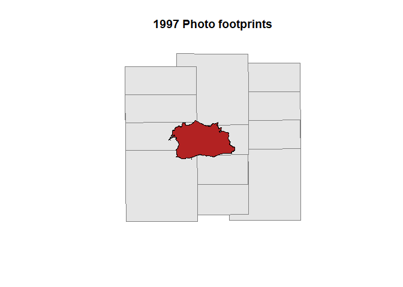
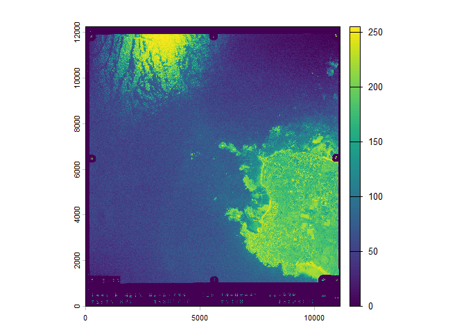
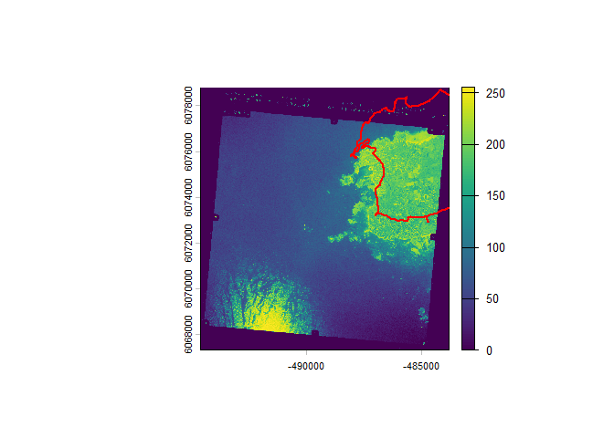
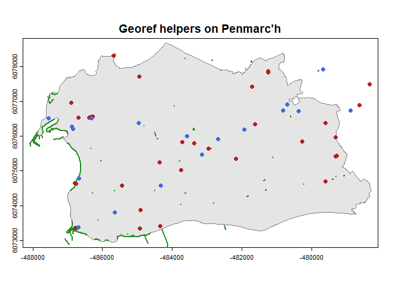

The goal of delorean is to make it easy to explore, download and georeference french historical aerial photo from Remonter le temps - IGN.
Installation
You can install the development version of delorean like so:
devtools::install_github("paul-carteron/delorean")Usage
library(delorean)
library(sf)
#> Warning: le package 'sf' a été compilé avec la version R 4.5.2
#> Linking to GEOS 3.13.1, GDAL 3.11.4, PROJ 9.7.0; sf_use_s2() is TRUE
library(terra)
#> Warning: le package 'terra' a été compilé avec la version R 4.5.2
#> terra 1.8.93
library(happign)
#> Please make sure you have an internet connection.
#> Use happign::get_last_news() to display latest geoservice news.
#>
#> Attachement du package : 'happign'
#> L'objet suivant est masqué depuis 'package:terra':
#>
#> relate
#> L'objet suivant est masqué depuis 'package:base':
#>
#> withinExplore
delorean allows exploration of available aerial photos with find_photos(). It intersects x (area of interest) with all photo footprints. Additional filters can be applied: year, color, and oblique (see ?delorean::find_photos).
x <- get_apicarto_cadastre("29158")
all_photos <- find_photos(x)
photos_1997 <- find_photos(x, year = 1997) |>
st_transform(st_crs(x))
plot(st_geometry(photos_1997), col = "grey90", border = "grey50", main = "1997 Photo footprints")
plot(st_geometry(x), col = "firebrick", add = TRUE) To get an overview of all available photographs for a given area, plot_photos(x) generates a bar chart summarizing the number of images by year and color type
plot_photos(x)
Download
For downloading, use get_photos() with the source returned by find_photos(). By default, the mode is set to raw, meaning the image has no spatial reference.
# Using photo numero = 430 for the sake of example
photo_1997 <- photos_1997[photos_1997$numero == 430, ]
url <- photo_1997$url
filepath <- get_photos(url)
#> ✔ Download complete.
photo <- rast(filepath)
plot(photo)
Georeference
Historical photos from IGN are provided with a centroid, resolution, and orientation. From these, a default georeferencing can be performed — but be aware it is significantly inaccurate ! (as shown below).
get_photos() offers two other modes: gcp and warp. The gcp mode only attaches Ground Control Points (GCPs), so the photo is georeferenced but not resampled onto a regular grid. The warp mode takes longer but resamples the photo to a grid, ensuring compatibility with most GIS software.
filepath <- get_photos(url, mode = "warp")
#> ℹ Processing [1/1]
photo <- rast(filepath)
plot(photo)
plot(project(vect(x), crs(photo)), border = "red", lwd = 2, add = T)
Georeference Help
Because the default georeferencing remains significantly inaccurate, delorean provides helpers to support manual georeferencing through the function get_georef_helpers(). This wrapper around happign::get_wfs() downloads prominent features that can assist in georeferencing, such as hydrological elements, infrastructure, roads, and buildings. All these layers are retrieved from IGN’s BD TOPO® V3 dataset.
georef_helpers <- get_georef_helpers(x, "infra", "other")
plot(project(vect(x), crs(photo)), col = "grey90", border = "grey50", main = "Georef helpers on Penmarc'h")
plot(vect(georef_helpers$construction_lineaire), lwd = 2, col = "forestgreen", add = TRUE)
plot(vect(georef_helpers$construction_ponctuelle), col = "firebrick", add = TRUE)
plot(vect(georef_helpers$point_de_repere), col = "royalblue", add = TRUE)